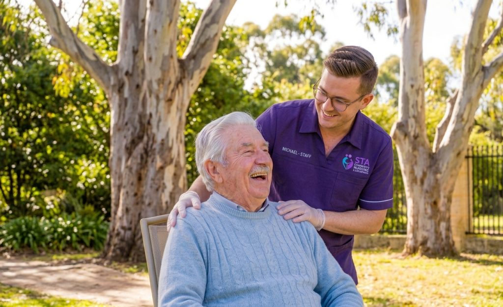

Home Care

STA Community Nursing & NDIS Services provides personal care, domestic assistance and everyday support to help you live comfortably and independently in the home you love. Your support is shaped around your routine and matched with support workers who suit you, across Melbourne and Victoria.

Support for everyday living
Whether you need a hand with the essentials or the little extras, we can help. Home care is flexible: some people have a visit once a week, others need support every day. Our home care services include:
- Personal care – help with showering, dressing, grooming and moving around the home.
- Cleaning services – keeping kitchens, bathrooms and living areas fresh, tidy and safe.
- Gardening – lawns, garden beds and outdoor spaces kept in order.
- Shopping assistance – groceries and errands, with you or on your behalf.
- Patient transport – getting to medical appointments and back.
Connection, community and respite
Good support is about more than tasks. We also offer companionship, social and community participation and respite care, so you can stay connected to the people and places that matter to you, and carers can take a well-earned break.
A regular visit from someone friendly to chat over a cuppa, go for a walk or head out to a local event can make a real difference to how your week feels.

Care for older Australians and people with disability
Our home care support includes aged care and disability care, delivered in your own home with dignity and respect. If you also have health needs, our nursing team and allied health professionals can support you too.
How home care with STA works
- Get in touch. Call 1300 782 227 or send an enquiry and tell us a little about the support you are looking for.
- We learn about you. We talk through your needs, routine and goals during your initial enquiry and assessment.
- Build your plan. Your support is shaped into a personalised care plan.
- Meet your support workers. You are matched with support workers who suit you, and your support begins at home.
Funding your home care
There is more than one way to pay for home care. Depending on your circumstances, support may be funded through government programs, through the NDIS if you are an eligible participant, or privately. Our funding options page explains the pathways and we can talk you through what applies to you. For official information you can also visit My Aged Care or the NDIS website.
Home care questions
Where do you provide home care?
We support people in their own homes across Melbourne and Victoria. Call 1300 782 227 and we will confirm whether we can help in your area.
Do I need an NDIS plan or an aged care package to get support?
Not always. Some people use government funding or the NDIS, and others pay privately. Get in touch and we will explain the options that may suit you.
Can I choose who supports me?
Your support is matched with support workers who suit you. Let us know what matters – such as your routine and preferences – when you enquire.
Can my family or carers be involved?
Yes. Family members and carers are welcome to be part of the conversation, and our respite care can give carers a break.
How do I get started?
Call 1300 782 227 or start your journey online. We will talk through what you need and connect you with the right local team.
Explore our Home Care services
- Aged care
- Disability Care
- Personal care
- Cleaning services
- Gardening
- Shopping assistance
- Patient transport
- Social and community participation
- Companionship
- Respite care
Explore our other services
Talk to our Home Care team
Not sure which service you need? Tell us a little about the support you are looking for and we will point you to the right one.